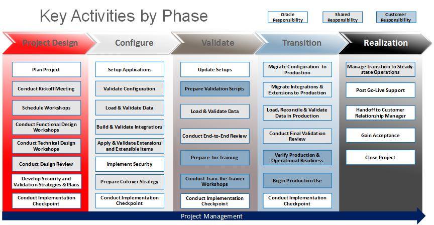
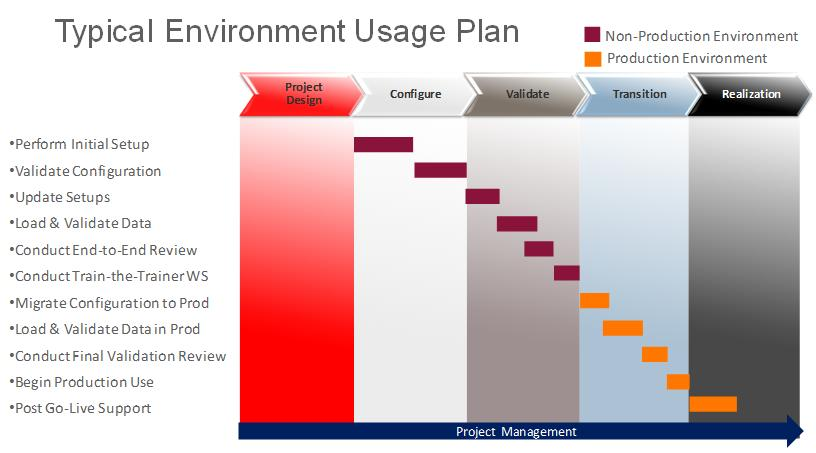

OUM |
CAS OUM (Cloud Application Services OUM) |
||
Method Navigation |
Current Page Navigation |
||
|
|
||||||||
The Cloud Application Services Oracle® Unified Method (CAS OUM) approach (formerly known as the OUM Cloud Application Services Implementation Approach) is Oracle's lightweight approach for implementing applications running on a cloud infrastructure. It emphasizes an out-of-the-box approach and adoption of best practices inherent in the application products as a foundational element of the approach.
Refer to the Guidance for detailed guidance information.
Refer to the Resources page for key links to valuable CAS OUM information.
The Cloud Application Services OUM (CAS OUM) approach is applicable to all HCM Cloud, Sales Cloud, Service Cloud and ERP Cloud application implementations.
While the focus of the approach is on the implementation of the standard, out-of-the-box functionality embodied in the products selected for implementation, the approach also includes support for selected additional services, such as integrations, data loads, project-specific documentation, training, etc.
The objectives of the CAS OUM approach follow:
The diagram below depicts the key activities that describe the CAS OUM approach. While it clearly does not reflect all of the activities that might be performed during a project, it does represent the “Top Level Flow” of activities that define the approach.

The approach is comprised of 5 phases – Project Design, Configure, Validate, Transition and Realization.
The Project Design phase is the first phase in the CAS OUM approach and is critical for establishing a positive impression, and setting appropriate expectations, with the customer and the project team. During this phase, the project is planned and the processes governing the conduct of the project defined. A Kickoff Meeting is then held to orient the entire project team to the project objectives and how the project will be conducted. Workshops are scheduled and conducted to gather setup information (Functional Design) and define technical details for integrations and data loads (Technical Design). Security and testing requirements are reviewed and plans for addressing them are prepared. The phase concludes with a checkpoint to verify that the phase objectives have been met and necessary approvals obtained.
In the Configure phase, the configuration settings documented in the Functional Design are implemented in the non-production environment. Workshops are then conducted with customer personnel to demonstrate the standard functionality and validate that the system behavior is as expected and meets the customer’s business needs. Customer data is also prepared, loaded and verified during this phase, and integrations, extensions and extensible items built and tested. Security is implemented, and a plan for taking the new system to Production is prepared. The phase culminates with another checkpoint to confirm that the phase objectives have been met and obtain the necessary approvals.
It should be stressed at this point that SaaS implementations focus on the implementation of standard product and do not involve customizing the product in the traditional sense. Extensions and extensible items as referenced in this guide represent adjustments which can be made to the product look and feel, etc., using standard product features that preserve those changes during upgrades.
The Validate phase is focused on preparing for and conducting an End-to-End Review of the new SaaS system, including standard functionality, data loads and integrations. Activities during the Validate phase include the entry of any configuration changes in the non-production environment and the validation of those values. If necessary, business processes and test cases are updated to reflect the resulting state of the environment and sample customer data is loaded in preparation for an end-to-end review.
The end-to-end review conducted in the Validate phase is intended to validate the final configuration, which will be used to configure the production environment in the next phase. During the end-to-end review, a series of Validation Scripts are executed to validate the proper functioning of the software solution. The test cases should also exercise the customer data that has been loaded to the non-production environment to validate that the data has been loaded properly. A train-the-trainer event is also held in the Validate phase to prepare designated customer personnel to train end users. Like the previous phases, a checkpoint at the end of the phase confirms that the objectives have been met and necessary approvals obtained.
The Transition phase focuses on moving the new software system and the organization to Production use. The validated configuration is migrated to the Production Environment, the customer data is loaded, and a final review is conducted with users and stakeholders to help ensure that the new environment is ready for use. A production and operational readiness assessment is made as a final checkpoint and the Transition phase concludes with the new system being placed in Production use.
The Realization phase begins active use of the system and, during the phase, the transition to steady-state operations is managed. This phase also includes any post-production support called for in the contract, the obtaining of the final acceptance of the system, and the closing out of the project and related processes.
Cloud Application Services implementation projects may range from simple projects involving only the configuration of standard functionality to more complex projects requiring custom integrations, complex workflows, additional data loads, etc.
The core tasks in the CAS OUM approach define the minimum set of steps necessary to implement the standard, out-of-the-box functionality embodied in the products selected for implementation. You may also need to include several other tasks in your project depending on your specific circumstances. For example, if your project includes custom integrations, or additional training or documentation requirements, you may need to include several optional tasks that support those additional services. A good test during project planning is to walk through the core tasks to ensure they meet the project’s needs. If not, begin considering optional tasks. This planning process will help create an efficient project approach.
Determining which optional tasks to include in the project plan is ultimately the responsibility of the project manager. To assist you in making your determinations, a number of optional task criteria, which serve as indicators for inclusion of related optional tasks, have been identified. Use the general guidelines below, as well as the optional task criteria included in the task overview for all tasks identified as optional, to determine which optional tasks to include in your project.
Optional task criteria and the optional tasks associated with them are described below in terms of the following general groupings:
If your project objectives include training for the project team, end users or both, you should include one or more of the following tasks:
If your project objectives include publishing project-specific documentation, you should include one or more of the following tasks:
If your project objectives include extensible items, extensions or custom reports, you should include one or more of the following tasks:
If your project objectives include the population of production tables in the new Oracle application system with data from legacy systems, you should include one or more of the following tasks:
If your project objectives include integrations to third-party or internally-developed systems or integrations between Oracle applications installed in separate environments, you should include one or more of the following tasks:
If your project objectives include conducting a Technical Readiness Assessment, you should include the following tasks:
If your project objectives include the preparation and loading of predefined correspondence, such as Offer Letters, or job descriptions, competence and job catalogs, or similar content, you should include the following tasks:
For Taleo implementations only, if your project objectives include the removal of test data from the Production Zone (Environment), you should include the following tasks:
If your project objectives include a handoff to a customer relationship manager, you should include the following task:
There are several key concepts that are important to understand in order to fully appreciate the CAS OUM approach. These concepts include:
The provisioning of Cloud environments is initiated by the Oracle License Sales representative, when the customer contracts with Oracle to provide SaaS hosted applications. The customer is asked to complete a questionnaire specifying the SaaS applications to be provided, which is then forwarded to the Cloud Operations team for provisioning of the environments.
Project managers should confirm that the customer’s environments have been provisioned and that administrative login information is available prior to commencement of the project. This is typically accomplished during the initial phone contact with the customer or as part of task PS.ACT.RPAC Review Project Approach with Customer and Confirm Customer Readiness during Project Start Up activities, at the latest.
A standard Oracle Cloud Service subscription is auto provisioned with two environments:
With the exception of increased sizing for improved performance in production, these environments are identical when auto provisioned. Environments are provisioned with English as the default language. To add support for additional languages, you must request that the appropriate language packs be installed on your environments.
In some cases, you might want to request special-purpose environments in addition to the standard production and non-production environments provided with the service. These additional environments have additional costs associated with them and typically are used like non-production environments.
A critical step in the project planning process is to develop a time-phased environment usage plan that describes the implementation tasks and the environment where they will take place aligned with the overall project timeline. In general, the non-production environment supports all non-production activities. The sole purpose of production is to run your real day-to-day business operations and it should not be used for non-production activities.
The following diagram illustrates a typical usage plan for the Cloud implementation lifecycle:

Project management in a Cloud Application Services implementation is not significantly different from project management in a traditional on-premises implementation. The key difference is the depth of detail to which the project management tasks and associated work products are produced.
As with other OUM projects, project managers should adhere to standard operating procedures and customer-facing project management practices when executing a CAS OUM project, commensurate with the size and complexity of the project.
Freddie Bellini, Simon Boulanger, Patti Burke, Sara Chejanovich, Laurie Coleman, Denise Duncan, Lars Ebert, Stuart Fleming, Candelas Cano Gallego, Oscar Gendrop, Matt Hammerbacher, Helle Hennings, Rebecca Hodgson, Richard Isola, Gregory Jones, Sareetha Kanchan, Steve Karnes, Chris Kirsanoff, Sesh Komanduri, Bas Laat, Pablo Macchi, Haruka Matsumoto, Gareth Millwood, Tamzin Morphy, Peter Moss, Daniel Muddiman, John Palethorpe, Kjirsten Petersen, Dinesh Pillay, Gergana Radoutcheva, Nadeem Rahman, Sasikala Rajagopal, Rob Readmond, Florencia Rizzi, Gerhard Seebacher, Shashank Shukla, Sabine Smith, Harrie Stoltenberg, Tatsuhiko Suekane, Ken Thompson, Deepak Thuse, Revathi Venkatraman, Sujith Verghese, Louann Weaver, Leslie Williams, Ian Wood

Copyright © 2006, 2016, Oracle and/or its affiliates. All rights reserved.